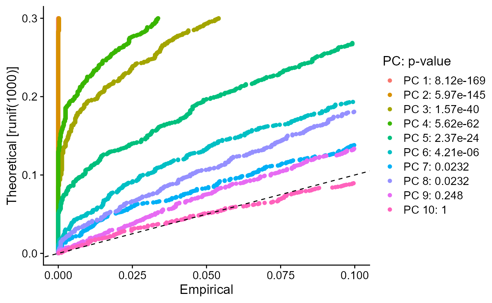
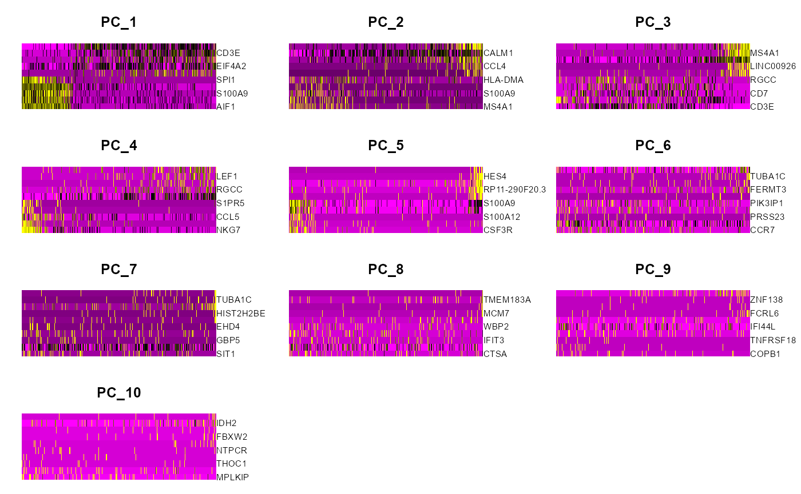

Dimensionality Reduction
Irzam Sarfraz
Source:vignettes/articles/cnsl_dimensionality_reduction.Rmd
cnsl_dimensionality_reduction.RmdIntroduction
Dimensionality reduction algorithms (PCA/ICA & tSNE/UMAP) can be run through the singleCellTK toolkit using both interactive shiny application and R console. For the interactive analysis, the toolkit offers a streamlined workflow to both compute metrics for dimensionality reduction and then visualize the results using any of the available interactive plots. For the console analysis, the toolkit offers a single wrapper function runDimensionalityReduction to compute metrics for any of the integrated algorithms and multiple methods to visualize the computed results.
Methods available with the toolkit include PCA from Scater package, PCA, ICA, tSNE & UMAP from Seurat package, tSNE from Rtsne package and UMAP from uwot package. Visualization options available for users include ‘2D Component Plot,’ ‘Elbow Plot,’ ‘JackStraw Plot’ and ‘Heatmap Plot.’ A complete list of supported visualization options against each method are specified at the bottom of the tabs below. To view detailed instructions on how to use these methods, please select ‘Interactive Analysis’ for using normalization in shiny application or ‘Console Analysis’ for using these methods on R console from the tabs below:
Workflow Guide
In general, both sub-tabs offer options for selection of data items and choice of parameters on the left side, and a visualization panel on the right side of the interface. A detailed workflow guide to run and visualize dimensionality reduction (DR) algorithms is described below:

1. To begin the DR workflow, click on the “Feature Selection & Dimensionality Reduction” tab from the top menu. This workflow assumes that before proceeding towards computation of DR, data has been uploaded, filtered and normalized (and optionally variable features have been identified) through the preceding tabs.

- Select “Dimensionality Reduction” tab.

- Select “PCA/ICA” or “tSNE/UMAP” appropriately.

Select a data item (assay or a feature subset) which should be used for computation.
Select an appropriate method for dimensionality reduction. Available choices are “PCA” from
scranpackage and “PCA” & “ICA” fromseuratpackage.Specify a name for the new data (reducedDim).
Specify the number of dimensions to compute against the selected algorithm. Default value is
10.Check the boxes against the visualizations that should be plotted after computation of reducedDims. This visualizations become available after computation on the right panel.
If “Compute HeatmapPlot?” is selected in step 8, you can specify how many features should be plotted in the heatmap by default. This setting can be changed later as well from the visualization panel on the right.
Press “Run” to start computation.
Once processing is complete, selected visualizations appear in this panel.

A 2D plot between the top two components is computed for all methods.

Elbow plot (optional) can be computed against PCA methods. It shows a relationship between the increasing number of components and the standard deviation, where components before an elbow break should be selected for downstream analysis.

Heatmap plot panel can be used to visualize the features against each of the computed component.
Customizations for the heatmap plot can be made by selecting the components that should be selected. Number of columns for visualization can be specified as well for better viewing experience.

Jackstraw plot can be computed with PCA methods.

To compute tSNE or UMAP, select the “tSNE/UMAP” sub-tab from the interface. The steps below are only concerned with the computation of tSNE or UMAP and may vary between both of these methods.
Select a data item (assay or feature subset) to use for tSNE/UMAP computation.
Select method for tSNE or UMAP computation.
Specify the name of the new reducedDim.
Specify the number of components to compute with the selected method. Default value is set to
10.Specify number of iterations. Default value is set to
1000.Set perplexity parameter for tSNE. Default value is set to
5.Start processing of the selected method.
Once computation is complete, a 2D plot between the components can be visualized in this panel.
Note: Some parameters may differ between different methods and may not have shown here.
Visualizations Supported
| Method | 2-Dimensional Component Plot | Elbow Plot | JackStraw Plot | Heatmap Plot |
|---|---|---|---|---|
| PCA | yes | yes | yes | yes |
| ICA | yes | no | no | yes |
| tSNE | yes | no | no | no |
| UMAP | yes | no | no | no |
In general, the first step is to compute a dimensionality reduction (e.g. PCA) and then the second step is to visualize the computed results. The usage of functions to compute and visualize results is described below.
1. Compute dimensionality reduction statistics using runDimensionalityReduction wrapper function:
sce <- runDimensionalityReduction(inSCE = sce, useAssay = "normalizedCounts", reducedDimName = "redDimPCA", method = "seuratPCA", nComponents = 20)To use the function, input a SingleCellExperiment object that contains the data assay and specify the required parameters (to see a complete list of supported parameters and to copy the function call against each method with the supported parameters, please view the ‘Parameters’ heading at the end of this page).
Function Call for Each Method:
scaterPCA:
sce <- runDimensionalityReduction(inSCE = sce, useAssay = "normalizedCounts", reducedDimName = "redDimPCA", method = "scaterPCA", nComponents = 10)seuratPCA:
sce <- runDimensionalityReduction(inSCE = sce, useAssay = "normalizedCounts", reducedDimName = "redDimPCA", method = "seuratPCA", nComponents = 10)seuratICA:
sce <- runDimensionalityReduction(inSCE = sce, useAssay = "normalizedCounts", reducedDimName = "redDimICA", `method` = "seuratICA", nComponents = 10)rTSNE:
sce <- runDimensionalityReduction(inSCE = sce, useAssay = "normalizedCounts", reducedDimName = "redDimTSNE", method = "rTSNE", perplexity = 30, nIterations = 1000)seuratTSNE:
sce <- runDimensionalityReduction(inSCE = sce, useAssay = "normalizedCounts", reducedDimName = "redDimTSNE", method = "seuratTSNE", nComponents = 10, useReduction = "pca", perplexity = 30)uwotUMAP:
sce <- runDimensionalityReduction(inSCE = sce, useAssay = "normalizedCounts", reducedDimName = "redDimUMAP", method = "uwotUMAP", nNeighbors = 30, nIterations = 200, minDist = 0.01, alpha = 1)seuratUMAP:
sce <- runDimensionalityReduction(inSCE = sce, useAssay = "normalizedCounts", reducedDimName = "redDimUMAP", method = "seuratUMAP", nComponents = 10, useReduction = "pca", minDist = 0.3, nNeighbors = 30, spread = 1)2. Visualize the dimensionality reduction results using of the available visualization options.
#To plot a simple 2D component plot for any of the 4 methods i.e. PCA, ICA, tSNE and UMAP
seuratReductionPlot(inSCE = sce, useReduction = "pca")
#To visualize a JackStraw plot
sce <- seuratComputeJackStraw(inSCE = sce, useAssay = "scaledCounts")
seuratJackStrawPlot(inSCE = sce)
#To visualize heatmap plot
seuratComputeHeatmap(inSCE = sce, useAssay = "scaledCounts", useReduction = "pca", dims = 10, nfeatures = 10)
#To visualize ElbowPlot
seuratElbowPlot(inSCE = sce, reduction = "pca")Example
# Load singleCellTK & pbmc3k example data
library(singleCellTK)
sce <- importExampleData(dataset = "pbmc3k")
# Perform Normalization
sce <- runNormalization(inSCE = sce, normalizationMethod = "RC", useAssay = "counts", outAssayName = "RCLogScaledCounts", scale = TRUE, transformation = "log2", pseudocountsBeforeTransform = 1, trim = c(10, -10))
# Run PCA
sce <- runDimensionalityReduction(inSCE = sce, useAssay = "RCLogScaledCounts", reducedDimName = "pca", method = "seuratPCA", nComponents = 10)
# Plot PCA
seuratReductionPlot(inSCE = sce, useReduction = "pca")
# Plot ElbowPlot
seuratElbowPlot(inSCE = sce, reduction = "pca")
# Compute & plot JackStrawPlot
sce <- seuratComputeJackStraw(inSCE = sce, useAssay = "RCLogScaledCounts")
seuratJackStrawPlot(inSCE = sce)
# Plot Heatmap
seuratComputeHeatmap(inSCE = sce, useAssay = "RCLogScaledCounts", useReduction = "pca", dims = 10, nfeatures = 10)
Parameters
The runDimensionalityReduction function takes in different parameters based on the specific method used for dimensionality reduction. See below for a complete description of parameters for each individual method in the runDimensionalityReduction function:
| Method | Parameters |
|---|---|
| scaterPCA |
inSCE (input SingleCellExperiment object), useAssay (name of the assay to use), reducedDimName (name of the computed reducedDim), method = “scaterPCA,” nComponents (number of components to compute, default is 10) |
| seuratPCA |
inSCE (input SingleCellExperiment object), useAssay (name of the assay to use), reducedDimName (name of the computed reducedDim), method = “seuratPCA,” nComponents (number of components to compute, default is 10) |
| seuratICA |
inSCE (input SingleCellExperiment object), useAssay (name of the assay to use), reducedDimName (name of the computed reducedDim), method = “seuratICA,” nComponents (number of components to compute, default is 10) |
| rTSNE |
inSCE (input SingleCellExperiment object), useAssay (name of the assay to use), reducedDimName (name of the computed reducedDim), method = “rTSNE,” perplexity (adjust the perplexity tuneable parameter for the underlying tSNE call, default is 30), nIterations (maximum iterations, default is 1000) |
| seuratTSNE |
inSCE (input SingleCellExperiment object), useAssay (name of the assay to use), reducedDimName (name of the computed reducedDim), method = “seuratTSNE,” nComponents(number of components to use from pca/ica, default is 10), useReduction (either pca or ica) and perplexity (adjust the perplexity tuneable parameter for the underlying tSNE call, default is 30) |
| uwotUMAP |
inSCE (input SingleCellExperiment object), useAssay (name of the assay to use), reducedDimName (name of the computed reducedDim), method = “uwotUMAP,” nNeighbors (size of local neighborhood used for manifold approximation, default is 30), nIterations (number of iterations performed, default is 200), minDist (minimum distance between embedded points, default is 0.01) and alpha (initial value of learning rate, default is 1) |
| seuratUMAP |
inSCE (input SingleCellExperiment object), useAssay (name of the assay to use), reducedDimName (name of the computed reducedDim), method = “seuratUMAP,” nComponents (number of components to use from pca/ica, default is 10), useReduction (either pca or ica), minDist (minimum distance between embedded points, default is 0.3), nNeighbors (size of local neighborhood, default is 30) and spread (effective scale of embedded points, default is 1) |
Individual Functions
While the runDimensionalityReduction wrapper function can be used for all dimensionality reduction algorithms including PCA/ICA & additionally for tSNE/UMAP, separate functions are also available for all of the included methods. The following functions can be used for specific methods:
PCA from Seurat [1][2] package:
# Recommended to find variable features before running seuratPCA
# sce <- seuratFindHVG(inSCE = sce, useAssay = "seuratScaledData")
sce <- seuratPCA(inSCE = sce, useAssay = "seuratScaledData", reducedDimName = "seuratPCA", nPCs = 20, verbose = TRUE)The parameters to the above function include: inSCE: an input SingleCellExperiment object useAssay: name of the assay to use for PCA computation reducedDimName: name of the computed PCA reducedDim nPCs: a numeric value indicating the number of components to compute verbose: a logical value indicating if progress should be printed
ICA from Seurat [1][2] package:
# Recommended to find variable features before running seuratICA
# sce <- seuratFindHVG(inSCE = sce, useAssay = "seuratScaledData")
sce <- seuratICA(inSCE = sce, useAssay = "seuratScaledData", reducedDimName = "seuratICA", nics = 20)The parameters to the above function include: inSCE: an input SingleCellExperiment object useAssay: name of the assay to use for ICA computation reducedDimName: name of the computed ICA reducedDim nics: a numeric value indicating the number of components to compute
PCA from Scater [3] package:
sce <- scaterPCA(inSCE = sce, useAssay = "logcounts", reducedDimName = "PCA", ndim = 50, scale = TRUE, ntop = NULL)The parameters to the above function include: inSCE: an input SingleCellExperiment object useAssay: name of the assay to use for PCA computation reducedDimName: name of the computed PCA reducedDim ndim: number of principal components to obtain from the PCA computation scale: logical value indicating whether to standardize the expression values ntop: number of top features to use as a further variable feature selection
TSNE from Rtsne package:
sce <- getTSNE(inSCE = sce, useAssay = "logcounts", reducedDimName = "TSNE", nIterations = 1000, perplexity = 30, run_pca = TRUE, ntop = NULL)The parameters to the above function include: inSCE: an input SingleCellExperiment object useAssay: name of the assay to use for normalization reducedDimName: name of the computed PCA reducedDim nIterations: maximum iterations perplexity: perplexity parameter run_pca: logical value indicating if tSNE should be run on PCA components ntop: number of top features to use as a further variable feature selection
TSNE from Seurat package:
# Recommended to find variable features & compute PCA before running seuratRunTSNE
# sce <- seuratFindHVG(inSCE = sce, useAssay = "seuratScaledData")
# sce <- seuratPCA(inSCE = sce, useAssay = "seuratScaledData", reducedDimName = "pca", nPCs = 20, verbose = TRUE)
sce <- seuratRunTSNE(inSCE = sce, useReduction = "pca", reducedDimName = "seuratTSNE", dims = 10, perplexity = 30)The parameters to the above function include: inSCE: an input SingleCellExperiment object useReduction: either “pca” or “ica” previously computed in the input object reducedDimName: name of the computed tSNE reducedDim dims: number of components to use from the useReduction parameter perplexity: perplexity parameter
UMAP from uwot package:
sce <- getUMAP(inSCE = sce, useAssay = "counts", reducedDimName = "UMAP", logNorm = TRUE, nNeighbors = 30, alpha = 1, nIterations = 200, minDist = 0.01, spread = 1, pca = TRUE, initialDims = 50)The parameters to the above function include: inSCE: an input SingleCellExperiment object useAssay: assay to use for UMAP computation reducedDimName: a name to store the results of the dimension reduction coordinates obtained from this method logNorm: whether the counts will need to be log-normalized prior to generating the UMAP nNeighbors: size of local neighborhood used for manifold approximation nIterations: number of iterations performed during layout optimization alpha: initial value of “learning rate” of layout optimization minDist: effective minimum distance between embedded points spread: effective scale of embedded points pca: logical value indicating whether to perform dimension reduction with PCA before UMAP initialDims: number of dimensions from PCA to use as input in UMAP
UMAP from Seurat package:
# Recommended to find variable features & compute PCA before running seuratRunUMAP
# sce <- seuratFindHVG(inSCE = sce, useAssay = "seuratScaledData")
# sce <- seuratPCA(inSCE = sce, useAssay = "seuratScaledData", reducedDimName = "pca", nPCs = 20, verbose = TRUE)
sce <- seuratRunUMAP(inSCE = sce, useReduction = "pca", reducedDimName = "seuratUMAP", dims = 10, minDist = 0.3, nNeighbors = 30, spread = 1)The parameters to the above function include: inSCE: an input SingleCellExperiment object useReduction: either “pca” or “ica” previously stored in the input object reducedDimName: a name to store the results of the dimension reduction coordinates obtained from this method dims: number of dimensions to use from useReduction parameter minDist: effective minimum distance between embedded points nNeighbors: size of local neighborhood used for manifold approximation spread: effective scale of embedded points
Visualizations Supported
| Method | 2-Dimensional Component Plot | Elbow Plot | JackStraw Plot | Heatmap Plot |
|---|---|---|---|---|
| PCA | yes | yes | yes | yes |
| ICA | yes | no | no | yes |
| tSNE | yes | no | no | no |
| UMAP | yes | no | no | no |